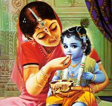
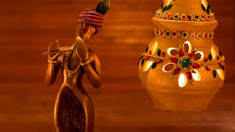
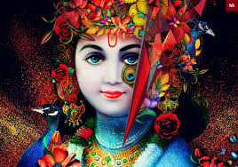
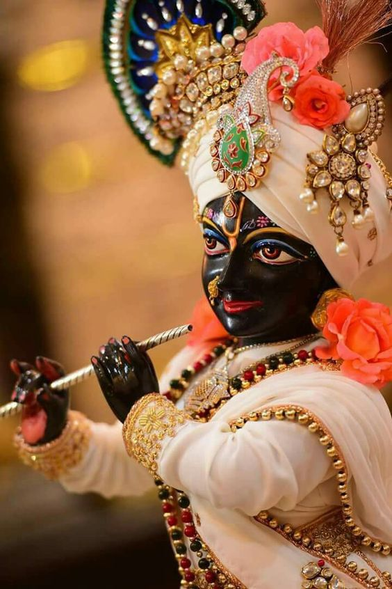

Photos About Janmastmi
   Information About Janmastmi
Krishna Janmashtami, also known simply as Janmashtami or Gokulashtami, is an annual Hindu festival that celebrates the birth of Krishna, the eighth avatar of Vishnu.According to Hindu lunisolar calendar, it is observed on the eighth tithi (Ashtami) of the Krishna Paksha (dark fortnight) in Bhadrapada Masa. This overlaps with August or September of the Gregorian calendar. It is an important festival, particularly in the Vaishnavism tradition of Hinduism.Dance-drama enactments of the life of Krishna according to the Bhagavata Purana (such as Rasa Lila or Krishna Lila), devotional singing through the midnight when Krishna was born, fasting (upavasa), a night vigil (Ratri Jagaran), and a festival (Mahotsav) on the following day are a part of the Janmashtami celebrations. It is celebrated particularly in Mathura and Vrindavan, along with major Vaishnava and non-sectarian communities found in Manipur, Assam, Bihar, West Bengal, Odisha, Madhya Pradesh, Rajasthan, Gujarat, Maharashtra, Karnataka, Kerala, Andra Pradesh, Tamil Nadu and all the other states of India.Krishna is Devaki and Vasudeva Anakadundubhi's son and his birthday is celebrated by Hindus as Janmashtami, particularly those of the Gaudiya Vaishnavism tradition as he is considered the Supreme Personality of Godhead. Janmashtami is celebrated when Krishna is believed to have been born according to Hindu tradition, which is in Mathura, at midnight on the eighth day of Bhadrapada month (overlaps with August and 3 September in the Gregorian calendar). Krishna was born in an area of chaos. It was a time when persecution was rampant, freedoms were denied, evil was everywhere, and when there was a threat to his life by his uncle King Kansa. Immediately following the birth at Mathura, his father Vasudeva Anakadundubhi took Krishna across the Yamuna, to foster parents in Gokul, named Nanda and Yashoda. This legend is celebrated on Janmashtami by people keeping fast, singing devotional songs of love for Krishna, and keeping a vigil into the night.After Krishna's midnight hour birth, statues of baby Krishna are washed and clothed, then placed in a cradle. The devotees then break their fast, by sharing food and sweets. Women draw tiny footprints outside their house doors and kitchen, walking towards their house, a symbolism for Krishna's journey into their homes